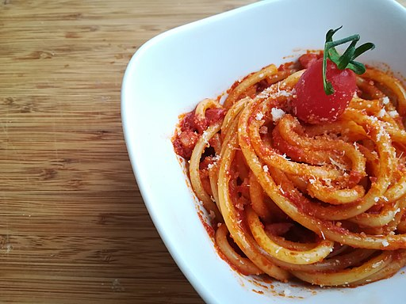

Magna Pasta
Bucatini all'amatriciana

Description
Amatriciana is a typical pasta dish from the cuisine of Amatrice in the Lazio region beloved all over the world!
It consists of pasta: bucatini or spaghetti served with the classic Amatriciana sauce made with peeled tomatoes,
guanciale and pecorino cheese. A unique goodness that originated in Amatrice as the shepherds' main meal.
Originally without tomatoes, it was named Gricia; only later, when it was imported from America, was it added
to the recipe and was thus called "Amatriciana".
Ingredients
- 320gr bucatini or spaghetti
- 150gr guanciale (1 cm thick slice to cut into strips)
- 400gr of peeled tomatoes
- 80gr pecorino romano cheese
- 1/2 cup of dry white wine
- 1 fresh chili pepper
- extra-virgin olive oil
- salt
Steps
- First put the guanciale cut into strips ( small equal rectangles not too fine) in a frying pan along with a small piece of chili pepper.
- Heat over high heat ( without adding oil) until they are browned, crispy and golden but not burned and have released all their oil.
- Then drain the pieces of guanciale by patting them dry with a scottex and set them aside in the meantime in the pan with fat left by the guanciale, add the chili pepper.
- Finally add another 2 tablespoons of oil to the pan, let it heat, deglaze with white wine, when it has completely evaporated, a gadd the peeled tomatoes cut into small pieces ( again make a fine pulp of all equal pieces).
- Then let it cook on a moderate flame for about 15 to 18 minutes. Finally, correct the salt.
- Meanwhile place the pasta water with salt.
- Then grate the pecorino cheese separately.
- Finally cook the pasta for about 4 minutes (it just needs to soften).
- Then take it out of the pot (without throwing away the cooking water) and place it directly in the sauce pan with 3 to 4 tablespoons of cooking water.
- Let the pasta finish cooking in the pan by risottoing the bucatini, if necessary add more pasta cooking water to make them creamy.
- At the end of cooking add grated pecorino cheese, stir over low heat to blend everything together, add crispy guanciale, mix everything together.
Here is your bucatini all'amatriciana ready!